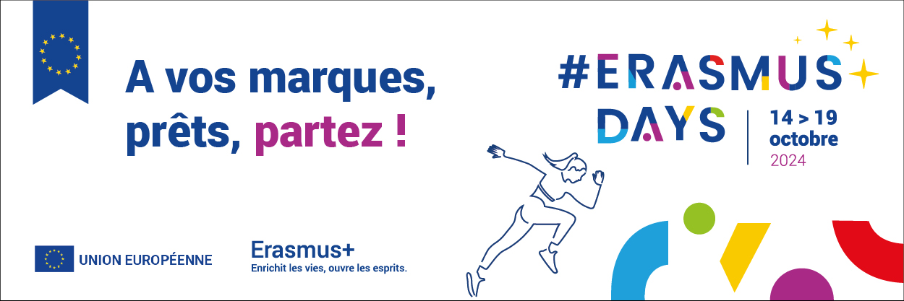
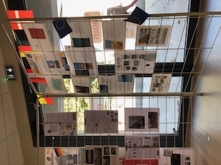
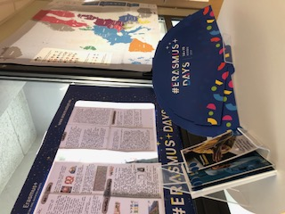
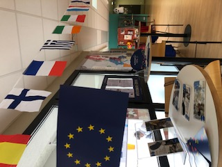

Notre-Dame la Riche fête les Erasmus Days !
17/10/2024
Du 14 au 19 octobre, notre institution participe aux Erasmus Days, une célébration internationale du programme Erasmus+, dédiée à promouvoir les échanges culturels et éducatifs. Ces six jours d’événements visent à encourager les citoyens du monde entier à découvrir et à s’impliquer dans les projets Erasmus+, un programme phare de l’Union européenne.
Notre-Dame la Riche, une institution engagée dans la mobilité internationale
Cette année encore, Notre-Dame la Riche prend part aux festivités en proposant des interventions animées par nos élèves qui ont eu l’opportunité de voyager à l’étranger grâce au programme Erasmus+.
En 2023-2024, nos lycéens de LV2 Allemand ont vécu une immersion d’un mois dans un lycée à Handrup, en Allemagne, où ils ont pu découvrir le système éducatif et la culture du pays.
Pour les élèves du lycée professionnel, l’été dernier a également été riche en expériences internationales : un groupe d’élèves a réalisé un stage d’un mois à Malte en juin. Pour en savoir plus sur leur séjour, consultez notre article 👉 Une Aventure Professionnelle et Interculturelle pour les Élèves du Lycée Professionnel à Malte
Erasmus+ 2024 : de nouvelles opportunités à l’horizon
Cette année scolaire 2023-2024 promet encore de belles opportunités pour nos élèves et étudiants ! Grâce au programme Erasmus+, les élèves du lycée professionnel pourront effectuer leur stage à Malte, en Espagne, ou encore au Royaume-Uni. Quant à nos étudiants de l’enseignement supérieur, ils auront l’occasion de réaliser des stages à travers toute l’Europe, renforçant ainsi leurs compétences professionnelles tout en découvrant de nouvelles cultures.
Expositions au CDI toute la semaine
À l’occasion des Erasmus Days, deux expositions seront présentées au CDI de Notre-Dame la Riche tout au long de la semaine :
Ces expositions offrent une immersion visuelle et narrative dans les aventures européennes de nos élèves.
Merci Erasmus+ !
Nous tenons à remercier le programme Erasmus+ qui nous permet, année après année, d’accompagner nos jeunes dans la découverte de différents pays et cultures, tout en contribuant à leur développement personnel et académique.
En savoir plus
Pour en savoir plus sur notre engagement à l’international et les Erasmus Days, rendez-vous sur notre page dédiée.
Vous souhaitez mieux nous connaître ? 📆 Venez à notre rencontre lors de nos Portes Ouvertes le samedi 16 novembre. Ce sera l’occasion d’échanger avec nos équipes sur les nombreuses opportunités de mobilité à l’étranger offertes à nos élèves et étudiants. Nous serons ravis de vous accueillir et de répondre à toutes vos questions !
  
Découvrir Notre Dame La Riche...

L'institution
Ancrée au centre de la ville de Tours, l’Institution Notre-Dame La Riche œuvre depuis des décennies à l’épanouissement des jeunes de la maternelle à l’enseignement supérieur...

Internat
Un cadre de vie et de travail en plein coeur de la ville de Tours dans lequel est privilégié l'apprentissage à l'autonomie et le vivre ensemble...

Une école hôtelière
L’école hôtelière de Notre Dame La Riche forme les étudiants, avec l'appui d'un restaurant pédagogique, dans trois filières de l’hôtellerie et de la restauration : la cuisine, le service et l’hébergement…